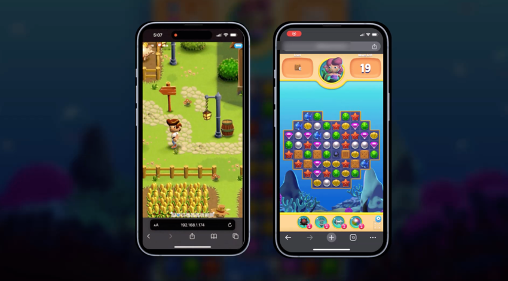
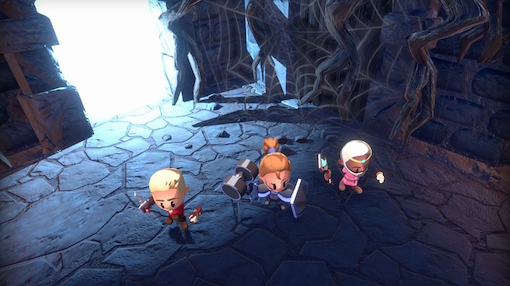
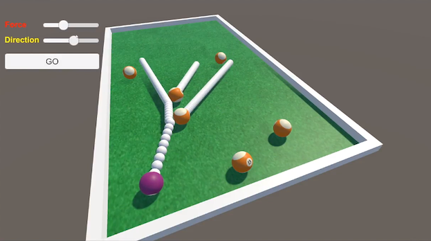
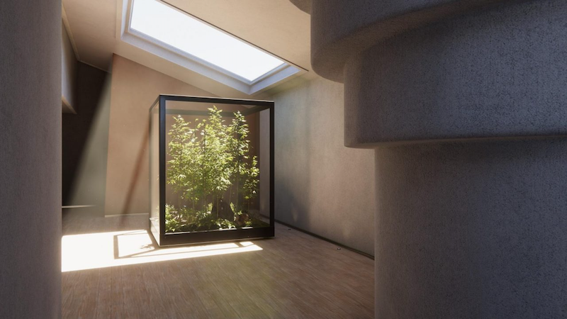
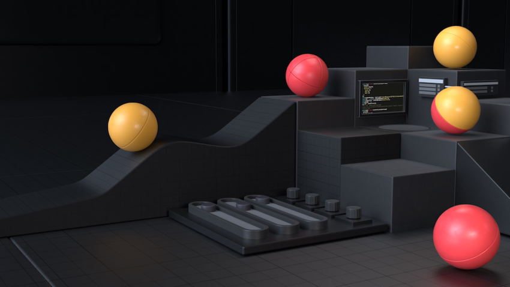

یونیتی 6.4 یک نسخهی آلفا است. اطلاعات بیشتر در مورد ویژگیهای جدید و نحوهی ارتقاء پروژههای موجود شما زمانی که یونیتی 6.4 از حالت بتا خارج شود، منتشر خواهد شد.
ویژگیها و بهروزرسانیهای کلیدی معرفی شده در خانوادهی نسخههای یونیتی 6 را کاوش کنید.
با استفاده از آخرین پیشرفتها در رندرینگ، نورپردازی و جلوههای بصری، صحنههاییک صحنه شامل محیطها و منوهای بازی شماست. هر فایل صحنهی منحصربهفرد را به عنوان یک مرحلهی منحصربهفرد در نظر بگیرید. در هر صحنه، شما محیطها، موانع و تزئینات خود را قرار میدهید، و اساساً بازی خود را به صورت تکهتکه طراحی و میسازید. اطلاعات بیشتر
مشاهده در واژهنامه خود را با تصاویر جذاب و مقیاسپذیر ارتقا دهید.

ساخت بازیهای چندنفره را با بستهها و سرویسهای چندنفرهی یونیتی ساده کنید.

تجربیات بهتری برای پلتفرمهای موبایل بسازید، از جمله یک زمان اجرای بهینهسازی شده برای مرورگرهای موبایل، و آخرین پیشرفتهای چند پلتفرمی را برای تمام پلتفرمهای پشتیبانی شده دریافت کنید.

خلاقیت و توسعه را با ابزارهای هوش مصنوعی برای تولید کد، ایجاد دارایی و استنتاج در زمان اجرا، که همگی در ویرایشگر و داشبورد یونیتی یکپارچه شدهاند، تسریع کنید.

بهرهوری و کارایی را در کل محیط توسعهی یونیتی خود با گزینههای بهتر پروفایلبندی، ProBuilder، Cinemachine و UI Toolkit بهبود بخشید.
محتوای ویژهی راهنمای کاربر یونیتی.

با ابزارهای مجهز به هوش مصنوعی در ویرایشگر و داشبورد یونیتی خلق کنید. از دستیار برای کمک متنی، از ژنراتورها برای ایجاد دارایی و از Sentis برای اجرای مدلها در زمان اجرا استفاده کنید.

انیمیشن در ویرایشگر یونیتی، شامل سیستم آواتاریک رابط برای بازهدفگیری انیمیشن از یک ریگ به ریگ دیگر. اطلاعات بیشتر
مشاهده در واژهنامه، کلیپهای انیمیشندادههای انیمیشن که میتوانند برای شخصیتهای متحرک یا انیمیشنهای ساده استفاده شوند. این یک قطعهی حرکتی ساده و واحد است، مانند (یک نمونهی خاص از) «بیکار»، «راه رفتن» یا «دویدن». اطلاعات بیشتر
مشاهده در واژهنامه و ماشینهای حالتمجموعهای از حالتها در یک کنترلر انیماتور که یک شخصیت یا شیء بازی متحرک میتواند در آن قرار گیرد، به همراه مجموعهای از انتقالها بین آن حالتها و یک متغیر برای به خاطر سپردن حالت فعلی. حالتهای موجود به نوع گیمپلی بستگی دارد، اما حالتهای معمول شامل مواردی مانند بیکار بودن، راه رفتن، دویدن و پریدن است. اطلاعات بیشتر
مشاهده در واژهنامه.

صدا در ویرایشگر یونیتی، شامل کلیپها، منابع، شنوندگان، وارد کردن و تنظیمات صدا.

ویژگیهای مخصوص دو بعدی ویرایشگر یونیتی شامل گیمپلی، اسپرایتهااشیاء گرافیکی دو بعدی. اگر به کار در سه بعدی عادت دارید، اسپرایتها اساساً همان بافتهای استاندارد هستند اما تکنیکهای ویژهای برای ترکیب و مدیریت بافتهای اسپرایت برای کارایی و راحتی در طول توسعه وجود دارد. اطلاعات بیشتر
مشاهده در واژهنامه و فیزیک.

نورپردازی واقعگرایانه یا سبکی را برای اعمال در طیف وسیعی از سبکهای هنری تنظیم کنید.

توسعهی بازی چندنفره با بستهها و سرویسهای چندنفرهی یونیتی.

شبیهسازی حرکت سه بعدی، جرم، گرانش و برخوردهابرخورد زمانی رخ میدهد که موتور فیزیک تشخیص دهد که کلایدرهای دو شیء بازی با هم تماس پیدا کرده یا روی هم قرار گرفتهاند، در حالی که حداقل یکی از آنها یک مؤلفهی Rigidbody دارد و در حال حرکت است. اطلاعات بیشتر
مشاهده در واژهنامه.

اطلاعاتی در مورد پلتفرمهایی که میتوانید برنامهی خود را برای آنها بسازید.

یک پایپلاین رندرمجموعهای از عملیات که محتویات یک صحنه را گرفته و آنها را روی صفحه نمایش میدهد. یونیتی به شما امکان میدهد از پایپلاینهای رندر از پیش ساخته شده انتخاب کنید یا خودتان بنویسید. اطلاعات بیشتر
مشاهده در واژهنامه انتخاب کنید و رندرینگ و پسپردازشفرآیندی که با اعمال فیلترها و افکتها قبل از نمایش تصویر روی صفحه، تصاویر محصول را بهبود میبخشد. میتوانید از افکتهای پسپردازش برای شبیهسازی ویژگیهای دوربین و فیلم فیزیکی استفاده کنید، به عنوان مثال Bloom و Depth of Field. اطلاعات بیشتر post processing, postprocessing, postprocess
مشاهده در واژهنامه خود را اضافه کنید.

بازیهای خود را با استفاده از اسکریپتنویسی در ویرایشگر یونیتی برنامهریزی کنید.

ابزارهای رابط کاربری موجود در ویرایشگر یونیتی.

سرویسهای یونیتی مانند Monetization و Cloud Services، Ads، Cloud Build و Multiplayer.

افکتهای ذرهای، فلر لنزمؤلفهای که اثر شکست نور در داخل لنز دوربین را شبیهسازی میکند. از یک فلر لنز برای نمایش نورهای بسیار روشن یا افزودن اتمسفر به صحنهی خود استفاده کنید. اطلاعات بیشتر
مشاهده در واژهنامه و افکتهای تمام صفحه را اضافه و سفارشی کنید.

تجربیات واقعیت افزوده، ترکیبی و واقعیت مجازیواقعیت مجازی (VR) کاربران را در یک دنیای سه بعدی مصنوعی از تصاویر و صداهای واقعگرایانه غوطهور میکند، با استفاده از یک هدست و ردیابی حرکت. اطلاعات بیشتر
مشاهده در واژهنامه را با ویرایشگر یونیتی توسعه دهید.